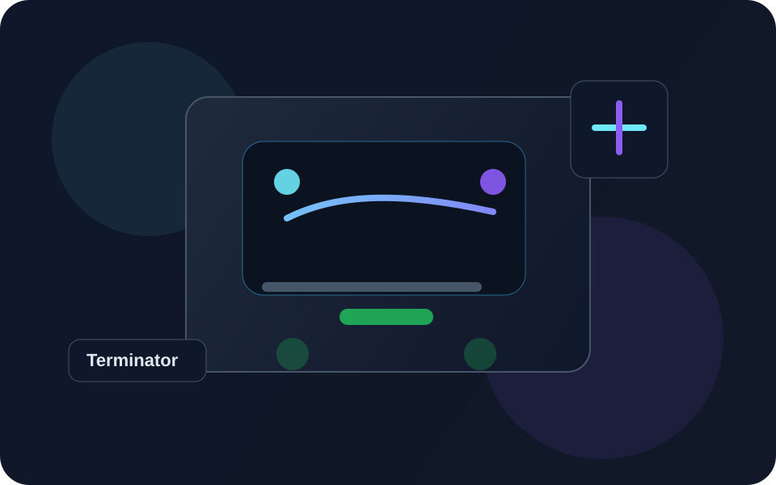

Hardware
Výběr motorů, zdrojů napájení, senzorů a základních komponent robota.
Terminator_lite je repozitář pro návrh, vývoj, experimenty a dokumentaci osobního robota, jehož cílem je propojit hardware, software a návrh uživatelského rozhraní.

Projekt je strukturovaný tak, aby bylo možné rychle najít důležité informace o hardwaru, postupu vývoje, plánu rozšíření a základních technických poznámkách.
Výběr motorů, zdrojů napájení, senzorů a základních komponent robota.
Architektura systému, experimenty a postupné rozšiřování funkčnosti robota.
Průvodce, poznámky a návod pro další rozvoj projektu v přehledné podobě.